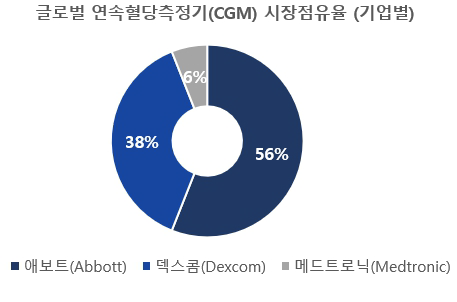
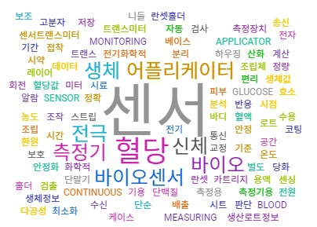
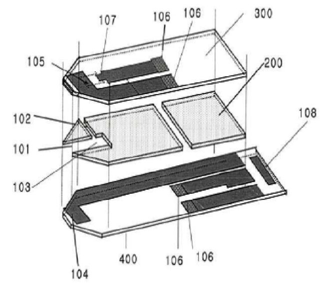
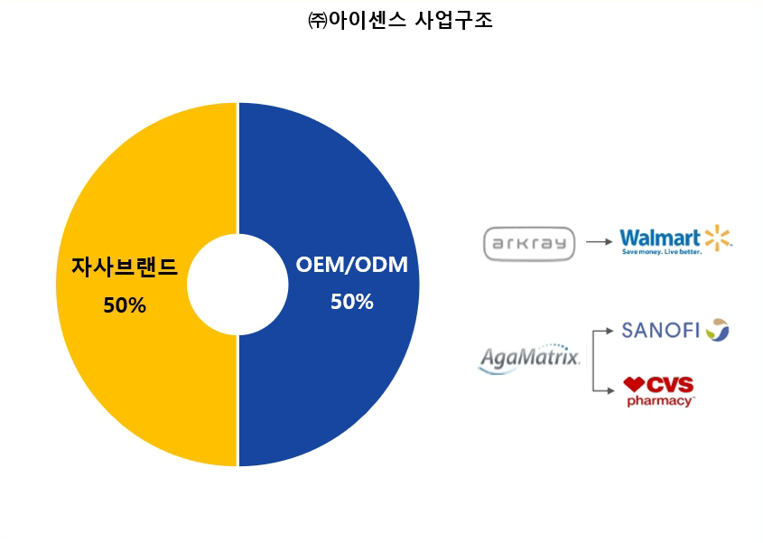

의료기기 산업 내 혈당측정기 시장은 고도의 기술 진입장벽으로 인해 로슈(Roche), 애보트(Abbott), 덱스콤(Dexcom) 등 글로벌 대기업 중심의 과점 구조를 형성해 왔다. 본 연구는 전유성(appropriability) 이론과 신시장형 파괴적 혁신 이론을 분석 틀로 설정하여, 한국 중소기업 ㈜아이센스가 어떠한 전략을 통해 이 시장에 진입하고 경쟁력을 확보했는지를 분석한다.
- 디지털 헬스케어 전환과 개인 건강 관리 수요 증가 속에서 혈당측정기 시장은 고도의 기술 진입장벽으로 인해 글로벌 대기업 중심의 과점 구조를 형성해 왔고, 본 연구는 전유성 이론과 신시장형 파괴적 혁신 이론을 분석 틀로 한국 중소기업 ㈜아이센스의 시장 진입·경쟁력 확보 전략을 분석했다.
- ㈜아이센스는 지속적인 연구개발(R&D)을 통해 고정밀 센서 기술을 축적하고, 이를 특허와 생산·유통의 내부화 전략으로 연결하여 전유성을 확보하였다.
- 동시에 가격 경쟁력과 기술 우수성을 바탕으로 기존 고가 제품과 차별화된 제품을 출시하며 새로운 수요층을 창출하였다.
- 이러한 전략은 생산 방식의 다각화, 품질 인증, 생산 거점 확대 등과 결합되어 글로벌 시장 확장의 기반이 되었다.
- 본 사례는 후발 중소기업이 기술 전유성과 파괴적 혁신을 활용하여 과점 시장에 진입하고 글로벌 시장으로 확장할 수 있었던 전략을 실증적으로 보여주며 전략적 시사점을 제공한다.
1. 서론
전 세계적으로 고령화가 급속하게 진행되며 만성 질환의 유병률도 함께 증가하고 있다. CES2025는 '디지털 헬스'를 올해의 핵심 기술 중 하나로 선정했다. 당뇨병은 대표적인 만성 질환으로, 체외진단기기 중 혈당측정기는 당뇨병 관리의 필수 도구일 뿐 아니라 웰니스 트렌드 확산에 따라 일반 소비자 사이에서도 관심이 증가하고 있으며, 개인용 혈당검사지는 한국의 의료기기 수출 상위 2품목에 속한다. 그러나 혈당측정기 시장은 오랜 기간 글로벌 대기업이 과점해 온 분야로, 중소기업이 진입해 성공하기 매우 어려운 구조다.
2. 연구배경 및 목적
개인용 혈당 측정기 산업은 Pavitt(1984)의 분류상 내부 연구개발을 통한 지식 축적과 특허 중심의 기술 전유 전략이 특징인 과학기반형(science-based) 산업에 속하며, 높은 기술 진입장벽과 강한 소비자 락인(lock-in) 효과로 신규 진입이 제한되는 구조적 특성을 지닌다. 글로벌 혈당측정기 시장은 2023년 약 170억 달러 규모에서 2030년까지 연평균 약 9% 성장해 약 330억 달러로 확대될 전망이다. 기술적으로는 손끝 채혈 기반의 자가혈당측정(BGM)과 피부 부착 센서로 간질액 내 포도당 농도를 24시간 연속 측정하는 연속혈당측정(CGM)으로 구분되며, 최근 기술의 중심축이 BGM에서 CGM으로 이동하는 산업 내 기술 패러다임 전환이 진행되고 있다.

3. 연구대상: ㈜아이센스
㈜아이센스는 2000년 차근식·남학현(前 광운대 교수)이 설립한 기업으로, 전기화학 기술 및 바이오센서 기술을 기반으로 혈당측정기를 포함한 현장진단(POCT) 의료기기를 생산·판매한다. 2024년 매출액은 2,911억 원이며 혈당측정기 부문이 전체 매출의 약 85%를 차지한다. 2003년 자사 최초의 혈당측정기 '케어센스(CareSens)' 시리즈를 출시했고, 2004년 CE 인증과 ISO 13485를 획득하며 기흥 공장을 준공해 대량 양산 체계를 갖췄다. 2012년 뉴질랜드 정부의 자가혈당측정기 독점 공급업체로 선정됐으며, 2010년대 중반 이후 한국 혈당측정기 시장 점유율 1위에 올랐다. 2013년 코스닥 상장, 2023년에는 CGM '케어센스 에어(CareSens Air)' 출시와 함께 미국 CGM 전문 기업 AgaMatrix를 인수했다. 회사의 핵심 역량은 Prahalad와 Hamel(1990)이 제시한 시장 접근성, 모방 불가능성, 고객 가치의 세 조건을 모두 충족하는 R&D 기반 기술 전유성과 전략적 기술 상용화 역량이다.
4. 이론적 배경
4.1 파괴적 혁신
Christensen과 Raynor(2003)는 파괴적 혁신을 기존 시장의 과잉 성능에 만족하지 않는 소비자층을 겨냥한 '로엔드형 파괴(low-end disruption)'와, 기존 제품이 너무 비싸거나 복잡해서 시장에 접근하지 못했던 비소비자(non-consumers)를 대상으로 새로운 수요를 창출하는 '신시장형 파괴(new-market disruption)'로 구분했다. Christensen et al.(2015)은 파괴적 혁신이 기술적 우월성이 아니라, 기존 시장이 대응하기 어려운 방식으로 비주류에서 출발해 주류를 잠식하는 경로에 의해 정의된다고 재정의했다.
4.2 전유성
Teece(1986)는 기술혁신을 선도한 기업이 반드시 경제적 성과를 거두는 것은 아니며, 혁신의 수익은 종종 모방자나 보완 자산(complementary assets)을 보유한 기업에 귀속된다고 분석했다. 그는 전유성 체제, 보완 자산, 지배적 설계를 수익화의 결정 요인으로 제시하고, 기업이 내부화(integration)·협업·라이선싱 중 가장 효과적인 상용화 전략을 선택해야 한다고 제안했다. Levin et al.(1987)과 Cohen et al.(2000)의 실증 연구는 특허가 특히 의약·화학 등 일부 산업에서 효과적인 전유 수단이며, 산업별로 다양한 전유 수단이 복합적으로 작용함을 보여준다.
5. 사례연구
5.1 연구개발(R&D) 기반 핵심 전략
창업자들은 대학 내 화학 센서 공동연구 그룹을 이끌며 1995년 정부의 기초과학 연구지원 사업에 선정됐고, 이를 계기로 상업적 응용이 가능한 전기화학 센서 기술 개발에 착수했다. 설립과 동시에 부설연구소를 세워 '센서 연구소'와 '디바이스 연구소'로 이원화했으며, 2024년 기준 전체 인력의 15% 이상이 연구직이고 매출액 대비 연구개발 투자 비율은 약 10% 이상(2024년 10.6%)을 유지하고 있다. 호주에서 발표된 BGM 정확도 비교 논문에서 'CareSens'는 미국당뇨병학회(ADA) 권장 기준인 오차율 ±5% 미만의 bias를 충족한 유일한 제품으로 보고되기도 했다.
초기에는 자본력과 제조·유통 인프라 등 보완 자산이 부족해 기술 라이선싱 방식으로 상업화를 추진했으나, 기술의 정밀도와 신뢰성이 입증되고 수익 기반이 확보되자 2003년 CareSens 시리즈를 자사 브랜드로 출시하며 직접 제조·판매하는 비즈니스 모델로 전환했다 — 기술혁신의 수익 실현을 자사 내로 전유하는 내부화(integration) 전략이다. 특허 측면에서는 2024년 기준 국내외 등록 특허가 443건에 이르고, 혈당측정기 관련 해외 특허 등록 242건·출원 450건을 포함해 총 692건의 특허 활동이 진행 중이다. 제조 공정의 내부화는 암묵지 형태의 보호 수단으로 작용해 경쟁사의 모방을 어렵게 하고, 전환비용을 높여 고객 락인 효과를 유도했다.


5.2 BGM 혁신과 상용화 전략
창업 당시 대부분의 BGM 기기는 3~6μL 수준의 혈액 채취와 30초 이상의 측정 시간을 요구했고, 스트립 반복 구매로 하루 5~10회 측정 시 연간 비용이 최소 100만 원을 초과할 수 있는 총소유비용(TCO) 구조가 자가 혈당 측정의 확산을 저해했다. ㈜아이센스는 약 0.5μL의 혈액만으로 5초 이내 측정이 가능한 기술을 한국 최초로 상용화하고 가격 접근성을 높여, 반복 채혈이 불편했던 고령자·비숙련 사용자 등 기술적·경제적 제약으로 자가측정을 회피하던 잠재 수요층을 시장으로 유입시켰다. 그 결과 2017년을 기점으로 글로벌 선도 기업 Roche를 제치고 매출 기준 한국 혈당측정기 시장 1위 기업으로 도약했으며, 점유율은 2014년 20%에서 2019년 36%까지 확대됐다.
글로벌 진출 단계에서는 브랜드 인지도가 제한적인 상황을 고려해 OEM/ODM 방식과 자체 브랜드 제품을 병행하는 전략을 채택했다. 전체 생산 물량의 절반가량이 OEM/ODM, 나머지가 자사 브랜드로 구성되며, 미국·독일·중국 등 주요 해외 시장에 현지 법인과 생산 기지를 설립했다. BGM 시장의 구조적 특성상 스트립의 반복 구매가 수익의 핵심이므로, 이러한 대량 생산·공급 체계는 락인 효과와 장기 수익성 확보에 결정적인 역할을 했다.

5.3 CGM 혁신과 상용화 전략
글로벌 CGM 시장은 2023년 약 89억 달러에서 2030년까지 연평균 16.5% 성장이 예상되는 시장이지만, 정밀 센서·복잡한 알고리즘·규제 승인이라는 높은 진입 장벽으로 Dexcom, Abbott, Medtronic 같은 극소수 대기업만 진입에 성공했고, 고가의 제품 구조로 수요가 중증 당뇨 환자에 한정되어 있었다. ㈜아이센스는 2023년 9월 한국 최초의 CGM 상용화 사례인 'CareSens Air'를 출시했다. 출시 당시 평균 절대 상대 오차(MARD)는 약 9.8%로 Dexcom G6(약 9.8%), Abbott Freestyle Libre(약 9.4%) 등 글로벌 선도 제품과 유사한 수준이었고, 트랜스미터를 제거한 센서·송신 일체형 구조, 블루투스 자동 전송, 업계 최장 수준인 15일 센서 수명으로 사용자 편의성을 높였다. 카카오헬스케어·삼성헬스와의 플랫폼 연동은 자체 보유하지 않은 디지털 플랫폼을 외부 보완 자산으로 활용해 기존 의료 중심 CGM이 제공하지 못했던 생활 밀착형 활용성을 실현했으며, 경증 당뇨 환자와 일반 건강관리 수요자 등 비소비자층을 유입시켜 새로운 시장 범주를 창출했다.
품질 인증 측면에서 ㈜아이센스는 2024년 2월 유럽연합 CE 인증을 글로벌 BGM 선도 기업이었던 Roche(2024년 7월)보다 앞서 획득했으며, 한국 기업 최초의 CGM CE 인증 사례다. 국내에서도 한국 기업 중 유일하게 식약처 연속혈당측정시스템 품목 허가를 획득했고, 미국 FDA 인증을 준비하며 범부처전주기의료기기연구개발사업에 참여하고 있다. 의료기기 산업에서 CE·FDA 같은 인증은 시장 진입과 확장을 가능하게 하는 핵심 보완 자산으로 기능한다.
6. 결론
6.1 연구 결과
전유성 이론의 관점에서, ㈜아이센스는 R&D 기반의 핵심 기술을 특허 중심으로 전유해 경쟁 기업의 모방을 방지했고, 기술 라이선싱 중심의 수익 구조에서 자사 브랜드 기반의 생산·유통 체계로 전환함으로써 기술혁신의 수익 실현을 내부화했다. 신시장형 파괴적 혁신 이론의 관점에서는, BGM 시장에서 사용자 편의성과 가격 접근성을 개선한 제품으로 자가측정을 기피하던 소비자층을 실질적 수요층으로 전환했고, CGM 시장에서는 정밀도와 편의성을 확보하면서 비용 진입장벽을 완화해 일반 건강관리 목적의 사용자들을 새롭게 포괄했다. 이 두 전략이 공정 혁신 및 품질 인증 전략과 결합되며 글로벌 시장 진입의 구조적 장벽을 효과적으로 극복했다.
6.2 시사점
- 기술 전유성과 상용화 역량의 결합: 핵심 기술 확보에 그치지 않고 특허, 생산 인프라, 브랜드 등 다양한 전유 수단으로 보호하며, 기술의 수익을 외부에 의존하지 않는 내부화 전략으로 연결해야 한다.
- 신시장형 파괴적 혁신의 조건: 단순한 저가·저성능 제품이 아니라 일정 수준 이상의 기술 정밀도와 사용자 접근성을 동시에 충족해야 하며, 비소비자층의 흡수와 새로운 사용 맥락의 창출을 통해 실현된다.
- 규제 대응의 내재화: R&D 기획 단계부터 글로벌 인증 기준을 설계에 반영한 결과 고난이도의 품질 인증을 비교적 빠르게 획득했다. 인증과 규제가 상용화의 핵심 관문인 산업에서는 설계 초기부터 규제 환경에 대응하는 역량이 경쟁력의 핵심이 될 수 있다.
- 기초연구의 전략적 가치: 기초과학 연구로 확보한 센서 기술의 정밀도와 일관성이 BGM 제품화를 거쳐 CGM으로의 기술 전환과 시장 확장으로 이어졌다.
- 연구의 한계: 2023년 출시된 CGM의 장기 성과 분석이 제한적이고, 단일 기업 사례로서 일반화에 한계가 있으며, 규제·보험 체계 등 외부 제도 환경 요인은 분석 범위에 포함하지 않았다.